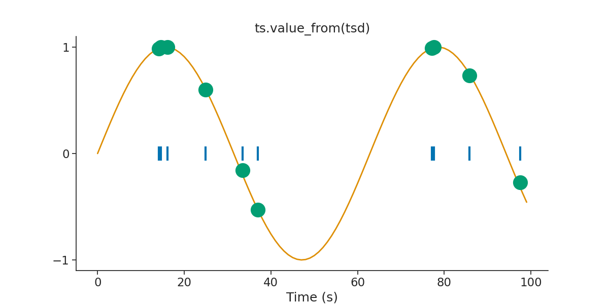

Note
Click here to download the full example code
Core Tutorial
This script will introduce the basics of handling time series data with pynapple.
Warning
This tutorial uses seaborn and matplotlib for displaying the figure.
You can install both with pip install matplotlib seaborn
import numpy as np
import matplotlib.pyplot as plt
import pynapple as nap
import pandas as pd
import seaborn as sns
custom_params = {"axes.spines.right": False, "axes.spines.top": False}
sns.set_theme(style="ticks", palette="colorblind", font_scale=1.5, rc=custom_params)
Time series object
Let's create a Tsd object with artificial data. In this example, every time point is 1 second apart.
Out:
Time (s)
---------- ---------
0.0 0.332206
1.0 0.0759203
2.0 0.331164
3.0 0.244969
4.0 0.374856
5.0 0.0604775
6.0 0.809941
7.0 0.305033
8.0 0.470975
9.0 0.888449
10.0 0.947252
11.0 0.367316
12.0 0.135305
13.0 0.615033
14.0 0.956213
15.0 0.542522
16.0 0.271212
17.0 0.419836
18.0 0.0322046
19.0 0.868914
20.0 0.613398
...
79.0 0.265505
80.0 0.449969
81.0 0.524689
82.0 0.164318
83.0 0.644452
84.0 0.37738
85.0 0.231139
86.0 0.712096
87.0 0.57757
88.0 0.477747
89.0 0.494719
90.0 0.83885
91.0 0.782375
92.0 0.345978
93.0 0.859676
94.0 0.297281
95.0 0.919438
96.0 0.835209
97.0 0.868866
98.0 0.9408
99.0 0.55157
dtype: float64, shape: (100,)
It is possible to toggle between seconds, milliseconds and microseconds. Note that when using as_units, the returned object is a simple pandas series.
Out:
Time (ms)
0.0 0.332206
1000.0 0.075920
2000.0 0.331164
3000.0 0.244969
4000.0 0.374856
...
95000.0 0.919438
96000.0 0.835209
97000.0 0.868866
98000.0 0.940800
99000.0 0.551570
Length: 100, dtype: float64
Time (us)
0 0.332206
1000000 0.075920
2000000 0.331164
3000000 0.244969
4000000 0.374856
...
95000000 0.919438
96000000 0.835209
97000000 0.868866
98000000 0.940800
99000000 0.551570
Length: 100, dtype: float64
Pynapple is able to handle data that only contains timestamps, such as an object containing only spike times. To do so, we construct a Ts object which holds only times. In this case, we generate 10 random spike times between 0 and 100 ms.
Out:
Time (s)
0.013500289
0.014912621
0.016259511
0.021890463
0.029981815
0.046826507
0.055722938
0.060490817
0.072683855
0.074415459
shape: 10
If the time series contains multiple columns, we use a TsdFrame.
tsdframe = nap.TsdFrame(
t=np.arange(100), d=np.random.rand(100, 3), time_units="s", columns=["a", "b", "c"]
)
print(tsdframe)
Out:
Time (s) a b c
---------- ------- ------- -------
0.0 0.78696 0.10269 0.15802
1.0 0.25528 0.67554 0.28713
2.0 0.20846 0.52137 0.83476
3.0 0.95001 0.18042 0.88816
4.0 0.95712 0.98598 0.92234
5.0 0.78649 0.71659 0.50053
6.0 0.005 0.57073 0.46071
7.0 0.08568 0.8095 0.20927
8.0 0.83989 0.69242 0.68032
9.0 0.07124 0.93623 0.76697
10.0 0.1879 0.79663 0.63947
11.0 0.69599 0.46284 0.2
12.0 0.46803 0.98306 0.12829
13.0 0.30479 0.8947 0.67025
14.0 0.14846 0.8203 0.77893
15.0 0.12147 0.1017 0.43426
16.0 0.75501 0.70026 0.8267
17.0 0.48866 0.46274 0.4802
18.0 0.83535 0.97507 0.41428
19.0 0.85739 0.491 0.58144
20.0 0.35399 0.92363 0.88859
...
79.0 0.3814 0.04648 0.51994
80.0 0.75162 0.31793 0.84463
81.0 0.0471 0.12632 0.283
82.0 0.79803 0.10785 0.65617
83.0 0.99317 0.40389 0.50936
84.0 0.71389 0.03835 0.73963
85.0 0.30077 0.33234 0.64369
86.0 0.26037 0.96528 0.30649
87.0 0.3461 0.54893 0.87596
88.0 0.1953 0.71859 0.14882
89.0 0.20285 0.02529 0.92944
90.0 0.93982 0.7076 0.85625
91.0 0.3162 0.73386 0.98176
92.0 0.23967 0.40164 0.00701
93.0 0.1918 0.04297 0.52549
94.0 0.76085 0.1528 0.70267
95.0 0.91376 0.92454 0.38753
96.0 0.89255 0.84771 0.44222
97.0 0.84374 0.06751 0.31746
98.0 0.39079 0.4288 0.45071
99.0 0.31633 0.04885 0.22202
dtype: float64, shape: (100, 3)
And if the number of dimension is even larger, we can use the TsdTensor (typically movies).
Out:
Time (s)
---------- -----------------------------
0.0 [[0.289481 ... 0.762764] ...]
1.0 [[0.265327 ... 0.970018] ...]
2.0 [[0.664827 ... 0.469994] ...]
3.0 [[0.163177 ... 0.17053 ] ...]
4.0 [[0.177937 ... 0.489455] ...]
5.0 [[0.061027 ... 0.199089] ...]
6.0 [[0.778232 ... 0.19203 ] ...]
7.0 [[0.254613 ... 0.023145] ...]
8.0 [[0.911184 ... 0.153041] ...]
9.0 [[0.069471 ... 0.608673] ...]
10.0 [[0.509081 ... 0.772857] ...]
11.0 [[0.580977 ... 0.809428] ...]
12.0 [[0.437115 ... 0.036996] ...]
13.0 [[0.06652 ... 0.583455] ...]
14.0 [[0.778156 ... 0.357759] ...]
15.0 [[0.475111 ... 0.923807] ...]
16.0 [[0.14523 ... 0.559294] ...]
17.0 [[0.361619 ... 0.729243] ...]
18.0 [[0.193411 ... 0.722009] ...]
19.0 [[0.778498 ... 0.194216] ...]
20.0 [[0.067532 ... 0.199804] ...]
...
79.0 [[0.590943 ... 0.534377] ...]
80.0 [[0.781043 ... 0.382808] ...]
81.0 [[0.07165 ... 0.993255] ...]
82.0 [[0.173639 ... 0.252987] ...]
83.0 [[0.260774 ... 0.86604 ] ...]
84.0 [[0.445729 ... 0.901406] ...]
85.0 [[0.793841 ... 0.563879] ...]
86.0 [[0.64147 ... 0.604211] ...]
87.0 [[0.84551 ... 0.24853] ...]
88.0 [[0.624453 ... 0.591027] ...]
89.0 [[0.924548 ... 0.813576] ...]
90.0 [[0.426601 ... 0.251397] ...]
91.0 [[0.33653 ... 0.201411] ...]
92.0 [[0.979453 ... 0.488118] ...]
93.0 [[0.719905 ... 0.915643] ...]
94.0 [[0.975579 ... 0.438401] ...]
95.0 [[0.032298 ... 0.020442] ...]
96.0 [[0.642136 ... 0.628466] ...]
97.0 [[0.636392 ... 0.016353] ...]
98.0 [[0.781852 ... 0.157551] ...]
99.0 [[0.752422 ... 0.58907 ] ...]
dtype: float64, shape: (100, 3, 4)
Interval Sets object
The IntervalSet object stores multiple epochs with a common time unit. It can then be used to restrict time series to this particular set of epochs.
epochs = nap.IntervalSet(start=[0, 10], end=[5, 15], time_units="s")
new_tsd = tsd.restrict(epochs)
print(epochs)
print("\n")
print(new_tsd)
Out:
start end
0 0 5
1 10 15
shape: (2, 2), time unit: sec.
Time (s)
---------- ---------
0 0.332206
1 0.0759203
2 0.331164
3 0.244969
4 0.374856
5 0.0604775
10 0.947252
11 0.367316
12 0.135305
13 0.615033
14 0.956213
15 0.542522
dtype: float64, shape: (12,)
Multiple operations are available for IntervalSet. For example, IntervalSet can be merged. See the full documentation of the class here for a list of all the functions that can be used to manipulate IntervalSets.
epoch1 = nap.IntervalSet(start=0, end=10) # no time units passed. Default is us.
epoch2 = nap.IntervalSet(start=[5, 30], end=[20, 45])
epoch = epoch1.union(epoch2)
print(epoch1, "\n")
print(epoch2, "\n")
print(epoch)
Out:
start end
0 0 10
shape: (1, 2), time unit: sec.
start end
0 5 20
1 30 45
shape: (2, 2), time unit: sec.
start end
0 0 20
1 30 45
shape: (2, 2), time unit: sec.
TsGroup object
Multiple time series with different time stamps (.i.e. a group of neurons with different spike times from one session) can be grouped with the TsGroup object. The TsGroup behaves like a dictionary but it is also possible to slice with a list of indexes
my_ts = {
0: nap.Ts(
t=np.sort(np.random.uniform(0, 100, 1000)), time_units="s"
), # here a simple dictionary
1: nap.Ts(t=np.sort(np.random.uniform(0, 100, 2000)), time_units="s"),
2: nap.Ts(t=np.sort(np.random.uniform(0, 100, 3000)), time_units="s"),
}
tsgroup = nap.TsGroup(my_ts)
print(tsgroup, "\n")
print(tsgroup[0], "\n") # dictionary like indexing returns directly the Ts object
print(tsgroup[[0, 2]]) # list like indexing
Out:
Index rate
------- -------
0 10.0031
1 20.0062
2 30.0093
Time (s)
0.110533337
0.120596367
0.195527975
0.308474116
0.395112553
0.406438621
0.539910507
0.552175407
0.568087173
0.915372209
0.931652922
0.993508307
1.04251004
1.056274059
1.058396388
1.061776879
1.120619772
1.138512168
1.142281504
1.281515777
1.764979108
...
98.0993379
98.171124478
98.175985609
98.308978764
98.55254303
98.663685021
98.668238272
98.828386983
98.877746952
99.117326645
99.128395064
99.223200457
99.259051197
99.303933712
99.590256479
99.596343472
99.678086321
99.69770735
99.712539095
99.741107975
99.959433408
shape: 1000
Index rate
------- -------
0 10.0031
2 30.0093
Operations such as restrict can thus be directly applied to the TsGroup as well as other operations.
newtsgroup = tsgroup.restrict(epochs)
count = tsgroup.count(
1, epochs, time_units="s"
) # Here counting the elements within bins of 1 seconds
print(count)
Out:
Time (s) 0 1 2
---------- --- --- ---
0.5 12 17 38
1.5 12 21 26
2.5 9 18 41
3.5 6 22 28
4.5 16 21 30
10.5 7 15 32
11.5 14 16 35
12.5 13 26 41
13.5 8 22 26
14.5 16 30 26
dtype: int64, shape: (10, 3)
One advantage of grouping time series is that metainformation can be appended directly on an element-wise basis. In this case, we add labels to each Ts object when instantiating the group and after. We can then use this label to split the group. See the TsGroup documentation for a complete methodology for splitting TsGroup objects.
label1 = pd.Series(index=list(my_ts.keys()), data=[0, 1, 0])
tsgroup = nap.TsGroup(my_ts, time_units="s", label1=label1)
tsgroup.set_info(label2=np.array(["a", "a", "b"]))
print(tsgroup, "\n")
newtsgroup = tsgroup.getby_category("label1")
print(newtsgroup[0], "\n")
print(newtsgroup[1])
Out:
Index rate label1 label2
------- ------- -------- --------
0 10.0031 0 a
1 20.0062 1 a
2 30.0093 0 b
Index rate label1 label2
------- ------- -------- --------
0 10.0031 0 a
2 30.0093 0 b
Index rate label1 label2
------- ------- -------- --------
1 20.0062 1 a
Time support
A key feature of how pynapple manipulates time series is an inherent time support object defined for Ts, Tsd, TsdFrame and TsGroup objects. The time support object is defined as an IntervalSet that provides the time serie with a context. For example, the restrict operation will automatically update the time support object for the new time series. Ideally, the time support object should be defined for all time series when instantiating them. If no time series is given, the time support is inferred from the start and end of the time series.
In this example, a TsGroup is instantiated with and without a time support. Notice how the frequency of each Ts element is changed when the time support is defined explicitly.
time_support = nap.IntervalSet(start=0, end=200, time_units="s")
my_ts = {
0: nap.Ts(
t=np.sort(np.random.uniform(0, 100, 10)), time_units="s"
), # here a simple dictionnary
1: nap.Ts(t=np.sort(np.random.uniform(0, 100, 20)), time_units="s"),
2: nap.Ts(t=np.sort(np.random.uniform(0, 100, 30)), time_units="s"),
}
tsgroup = nap.TsGroup(my_ts)
tsgroup_with_time_support = nap.TsGroup(my_ts, time_support=time_support)
print(tsgroup, "\n")
print(tsgroup_with_time_support, "\n")
print(tsgroup_with_time_support.time_support) # acceding the time support
Out:
Index rate
------- -------
0 0.10348
1 0.20695
2 0.31043
Index rate
------- ------
0 0.05
1 0.1
2 0.15
start end
0 0 200
shape: (1, 2), time unit: sec.
We can use value_from which as it indicates assign to every timestamps the closed value in time from another time series. Let's define the time series we want to assign values from.
tsd_sin = nap.Tsd(t=np.arange(0, 100, 1), d=np.sin(np.arange(0, 10, 0.1)))
tsgroup_sin = tsgroup.value_from(tsd_sin)
plt.figure(figsize=(12, 6))
plt.plot(tsgroup[0].fillna(0), "|", markersize=20, mew=3)
plt.plot(tsd_sin, linewidth=2)
plt.plot(tsgroup_sin[0], "o", markersize=20)
plt.title("ts.value_from(tsd)")
plt.xlabel("Time (s)")
plt.yticks([-1, 0, 1])
plt.show()

Total running time of the script: ( 0 minutes 1.342 seconds)
Download Python source code: tutorial_pynapple_core.py